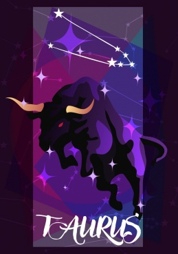

Características dos Signos
Áries: A impulsividade em pessoa, o ariano sabe o que quer. E quer agora. Para irritar um ariano? Não o deixe falar, interrompa-o toda hora, ou então fale beeem devagar. No amor, deixam a conquista em primeiro lugar e gostam de correr riscos, ou seja, triângulos amorosos são com eles mesmos! Arianos também têm as emoções à flor da pele. Se você conta que foi assaltado, a reação do ariano será socar a mesa e reclamar do absurdo.
Touro: Taurinos buscam a praticidade e o conforto acima de tudo. Podem não ser românticos, já que antes de entrarem num relacionamento, vão querer saber das contas, onde vão morar se a relação será estável. Estabilidade é tudo para eles. Para irritar um taurino, pegue suas coisas e não devolva ou peça um pedaço do que eles estiverem comendo. Ao contar a um taurino que você foi assaltado, ele não fica preocupado “O importante é que você está bem.” Gêmeos: Quer saber as últimas fofocas? Pergunte a um geminiano! Eles gostam de falar, debater ideias, querem encontrar seu gêmeo intelectual. E por isso mesmo, para irritar um geminiano, faça longos monólogos, exponha suas emoções, chore. Ou então, não converse com eles. Também são extremamente indecisos e qualquer situação pode virar um conflito existencial. Contar sobre um assalto é pedir para receber uma aula de política social. Câncer: Caseiros, emotivos e românticos, cancerianos querem, acima de tudo, um ombro amigo. Entram na relação querendo um casamento e alguém para cuidar e paparicar. Se quiser irritar um canceriano, insulte sua mãe ou diga que sua casa é brega. Carentes, vão fazer de tudo para não se sentirem sozinhos. Mas se você contar que foi assaltado, ele vai cuidar de você, te dar um copo de água com açúcar e fazer com que você se acalme. Leão: O que leoninos mais querem? Serem o centro das atenções! No amor, buscam alguém que compartilhe suas ideias, mas acima disso, querem alguém que lhe diga sempre como ele é demais! São orgulhosos e gostam de marcar presença. Irrite um leonino esquecendo seu nome, ou ignore-o e o faça se sentir pouco importante. Conte que foi assaltado e ele irá mostrar como resolveria o problema com suas próprias mãos. Virgem: Virginianos tem uma palavra de ordem: organização! Podem até ficar autoritários devido a isso. Antes de tomar qualquer decisão, analisam todos os detalhes. Buscam um relacionamento funcional, com ordem, bom senso e seguindo uma rotina rígida. Para irritar um virginiano, esqueça a pasta de dentes aberta, não tire os pratos da mesa, desorganize sua casa. Conte sobre um assalto e vão recomendar passar no médico, só pra ver se tá tudo bem. Libra: Como sempre buscam o equilíbrio, librianos podem acabar sendo bem indecisos. Procuram um relacionamento com igualdade e cooperação mútua. Para irritá-los mande-o tomar todas as decisões, e rápido! Ou então, seja grosseiro em público. Apesar disso, são bem despreocupados com problemas rotineiros. Ao ficarem sabendo do seu assalto, vão dizer que não foi nada demais, eles também já foram, e olha só, a vida continua. Escorpião: Escorpianos são apaixonados pelo perigo. Querem um relacionamento conturbado, com crises de ciúme e emoções sempre à flor da pele. São orgulhosos, para irritar um escorpiano, tenha mais sucesso do que ele ou deixe-o por fora dos assuntos, dizendo “isso não é da sua conta”. Gostam de quebrar regras e podem ser um pouco violentos. Se você contar que foi assaltado, vão comentar “é nessas horas que é bom andar armado”. Sagitário: Idealistas e aventureiros, sagitarianos querem fugir da rotina. Buscam um parceiro que embarque em qualquer viagem com eles. Também querem evitar responsabilidades. Para irritá-los, dê-lhe muitas tarefas, fique de mau-humor e nunca participe de nada do que ele inventar. Para eles, a vida é uma diversão e o exagero, essencial. Foi assaltado? O sagitariano vai te levar para dar queixa e, depois, para fazer alguma viagem maluca. Capricórnio: Sucesso: o sonho de todo capricorniano. Nos relacionamentos, a paixão pode ficar de lado, contanto que o parceiro o ajude a crescer na vida. Para irritar um capricorniano, lembre-o de sua baixa posição social, faça escândalo em público ao lado dele ou deixe-o esperando por horas. Afinal, tempo é dinheiro e isso é essencial para os nativos do signo. A primeira pergunta que fará a você, depois que contar sobre um assalto, é quanto os bandidos levaram. Aquário: Qualquer situação é boa para os aquarianos. Adaptáveis, o que eles valorizam mesmo é a liberdade. Num relacionamento, vão evitar sentimentalismos e buscar, em primeiro lugar, um bom amigo. Irrite um aquariano sendo muito emotivo, abrace-o longamente, chore, ligue para ele várias vezes ao dia. São despreocupados e ignoram qualquer problema por um bom momento de diversão. Você foi assaltado? “Deixa isso para lá e vamos fazer uma festa!” Peixes: Indecisos, os piscianos mudam de opinião e humor a toda hora. Também são muito sentimentais e vão precisar de um parceiro protetor e compreensivo em seus relacionamentos. Irrite um nativo de Peixes mandando-o ser mais independente, leve-o para lugares barulhentos, deixe-o falar por horas e depois diga que não entendeu nada. Você conta que foi assaltado? O pisciano sabe que o mundo é cheio de perigos, vai te dar um amuleto de proteção.
Os 12 signos astrológicos se dividem entre quatro elementos: Água, Fogo , Terra e Ar . De forma bem simplificada, podemos dizer que a natureza de cada um dos elementos astrológicos são as seguintes:
SIGNOS DE FOGO: Os signos de fogo são Áries, Leão e Sagitário; Natureza do Fogo: entusiasmo; Características do elemento fogo: criatividade e autoestima.

SIGNOS DE TERRA: Os signos de Terra são Touro, Virgem e Capricórnio; Natureza da Terra: praticidade; Características do elemento Terra: capacidade de realização e de lidar com a realidade
SIGNOS DE AR: Os signos de Ar são Gêmeos, Libra e Aquário; Natureza do Ar: pensamento; Características do elemento Ar: sociabilidade e clareza mental.

SIGNOS DE ÁGUA: Os signos de Água são Câncer, Escorpião e Peixes; Natureza da Água: emoção; Características do elemento Água: conexão com as próprias emoções e com as dos outros.
ACESSE AQUI PARA LER O SEU HORÓSCOPO
Técnico de Desenvolvimento de Sistemas
Profs. Telma e Edinho